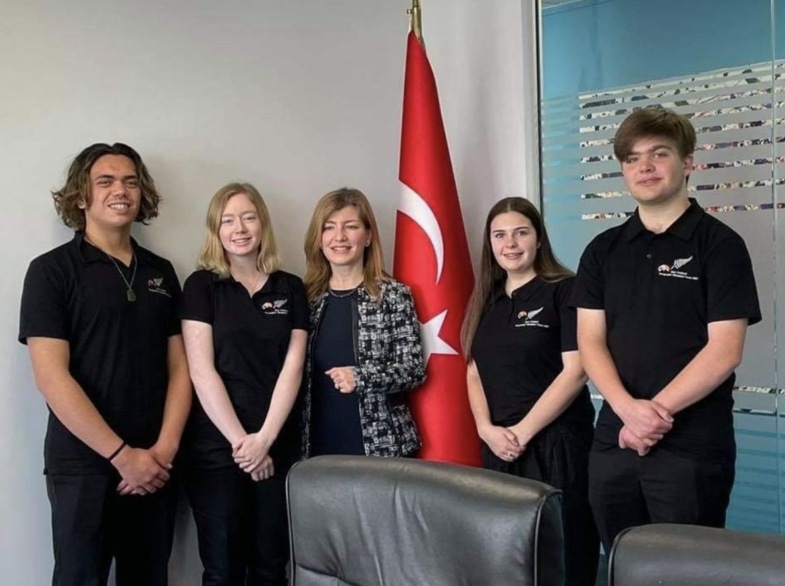

New Zealand Geographic Society and the New Zealand Board of Geography Teachers (NZBoGT) are the organisations that support the New Zealand team that travels to the International Geograpy Olympiad (iGeo).
The NZBoGT's vision is to:
We advise and consult with the Ministry of Education and New Zealand Qualifications Authority of matters of interest to New Zealand geography teachers and students.
The NZBoGT, through its Olympiad programme, aims to promote excellence in geographic thinking and application.
The Olympiad programme is open to all New Zealand students of Geography. A national competition is held from which a team of four students is selected, trained, and supported to compete in the annual International Geography Olympiad (iGeo). The New Zealand team competes against teams from approximately 50 other countries from around the globe.
The format of the competition is enshrined in the Olympiad statutes. Three formal tests include an extended written examination testing a wide range geographical understanding, a multimedia examination, and a two-day practical field work exercise that assess the application and communication of geographic thinking to solve real world problems of a spatial nature. Students also participate in several cultural events and a geographic poster competition, sharing New Zealand with the rest of the world.
The inaugural International Geography Olympiad was in 1992. New Zealand first competed in 2006 and since then has continued to enjoy considerable success in this prestigious event. In the 12 Olympiads New Zealand has competed in, the teams have claimed a total of 23 medals comprised of 13 bronze, 9 silver, and 1 gold. The last team to compete was during the 2021 event hosted by Istanbul, Turkey. Although this event was a virtual (online) event due to Covid restrictions, the students were able to get together in Wellington, to participate as a national team. In between sitting their iGeo examinations, the team enjoyed a range of local excursions and experiences including being hosted by the Turkish Ambassador, Omur Unsay, at the Turkish Embassy in Wellington.
Check out the iGeo Website to see what past competitions have been.
The 2021 iGeo Team

Jamaine Young and Stella Blackwood (Kerikeri High School), Turkish Ambassador - Omur Unsay (centre), Leah Hamilton-Cross (Darfield High School, Canterbury) and Peter Blaikie (Kings College, Dunedin).